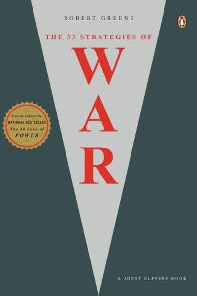

Library › Power & Strategy
The 33 Strategies of War — Summary & Key Lessons

From Sun Tzu to Napoleon to modern boardrooms — the complete field manual for outwitting your rivals.
📖 OPEN THE FULL INTERACTIVE BREAKDOWN →🌐 Read it in Hindi, Hinglish, Gujarati, Tamil & 22 more languages — free, with audio.
💡 The Big Idea
Robert Greene's most ambitious book turns 3,000 years of military history — Sun Tzu, Hannibal, Napoleon, Patton, and modern corporate battles — into 33 strategies for any competitive arena: business, politics, relationships, careers. The core insight is that conflict is inevitable; the question is who directs it. Master the strategies and you become a 'warrior' who chooses the battlefield; ignore them and you become the battlefield.
🧠 The 5 Key Lessons
Lesson 1: Declare War on Your Enemies
Strategy 1: The Polarity Strategy
Greene's first strategy: choose your side and declare it. Conflict with rivals is not a distraction — it sharpens your focus, mobilizes your allies, and simplifies your choices. A warrior without enemies grows soft; a defined battle gives your life and work direction. Declare war in your own mind first: decide who and what you're fighting for.
📖 Example: After decades as a journeyman, Michael Jordan used every slight — from being cut as a sophomore to being benched in college — as ammunition. He invented enemies, kept them close, and let them fuel one of the greatest careers in sport. Read the full example →
⚡ Do this: Write down your real battle: one competitor to beat, one weakness to destroy, one standard to reach. Frame it as a campaign, not a wish.
Lesson 2: The Guerilla-Warfare Strategy: Never Fight a Fair Fight
Strategies 4–5: The Guerilla
If your opponent is bigger, do not meet them head-on — you lose. The guerilla way: avoid strength, attack weakness, stay mobile, strike and vanish. In business and career terms, this means competing where the giants are not: a niche, a speed advantage, an unconventional angle. Your smallness is your camouflage.
📖 Example: David beat Goliath by refusing the armored duel and using a sling — a weapon the giant's armor didn't cover. Modern versions: startups like Airbnb attacking the hotel giants' blind spot (spare rooms, not hotel rooms) rather than their stronghold. Read the full example →
⚡ Do this: List your giant's strengths — then list where they are weak, slow or indifferent. Attack only there. Never trade blow for blow.
Lesson 3: The Controlled-Chaos Strategy
Strategy 14: Chaos
In moments of upheaval, most people panic and freeze — which is exactly when the strategic mind takes over. If you can't avoid chaos, learn to create and direct it: keep your own mind calm, use the confusion to move unnoticed, and let your opponents exhaust themselves thrashing in the storm.
📖 Example: When the US auto industry was drowning in the 1970s oil shock, Japanese manufacturers quietly poured resources into the small fuel-efficient cars everyone had ignored — emerging from the chaos as the new kings of the market. Read the full example →
⚡ Do this: In your next crisis, take 10 slow breaths, then write one sentence: 'What are people panicking about that I can calmly exploit?'
Lesson 4: The Turning-the-Tables Strategy
Strategy 16: Weakness as Strength
Your greatest weakness can be converted into your greatest weapon — if you stop hiding it. The strategy: transform an apparent disadvantage into an advantage by using it as bait, cover, or a force multiplier. The underdog's weakness becomes a trap: opponents underestimate you, expose themselves, and walk into your counterattack.
📖 Example: Israel's early wars were fought with a tiny army — so it built preemption, speed and intelligence into its doctrine, turning smallness into a decisive edge. In business, the 'small company' that seems harmless to giants can move fast while they deliberate. Read the full example →
⚡ Do this: Name your biggest weakness honestly. Then ask: 'How could this be an unfair advantage?' Write one way to weaponize it.
Lesson 5: The Death-Ground Strategy: Burn Your Bridges
Strategy 33: The Death-Ground
Sun Tzu's most radical play: put yourself where retreat is impossible — your own back to the wall — and your fear of death becomes more dangerous to the enemy than your army. When you burn the bridges, your energy doubles because the escape route is gone. Use it only when truly committed; it is the strategy of last resort for the utterly serious.
📖 Example: In 1519, Cortés burned his ships on the Mexican coast, telling his men: 'We are here to stay.' The army, with no way back, fought with total commitment. Alexander the Great used the same move at Issus; modern versions: quitting your job to force your… Read the full example →
⚡ Do this: Choose one commitment and remove the exit: announce a deadline publicly, put money down, tell the person you'd hate to disappoint. Then let the pressure work.
✅ 5-Step Action Plan
- Define your battle in one sentence — competitor, weakness, or standard.
- Map your giant's weak spots and attack only there.
- Write your crisis sentence now: what would you exploit if chaos hit?
- Convert one perceived weakness into a planned advantage.
- Burn one bridge this month — make one commitment inescapable.
⚠️ When This Doesn't Work
Greene's 33 strategies are the most complete war manual ever written — and the Spanish Armada is proof that strategy cannot fix logistics: the Armada's plan was textbook — overwhelming force, careful timing, coordinated invasion — and it collapsed against storms, supply failures and English ships, because the strategy was brilliant and the execution environment was brutal. Greene's laws work in the boardroom where you control the variables; they fail against the sea, the season and the supply chain. Strategy is a map; weather is not on the map.
💀 The Graveyard Proves It
⚓ The Spanish Armada — The 'Invincible' Fleet That God Was Supposed to Steer. Burn: ~60 ships, 15,000 men, naval supremacy. Read the full case study →
💬 Best Quotes from The 33 Strategies of War
- “The warrior must be calm and never waver in the face of uncertainty.”
- “You must be willing to do what it takes to win — including creating chaos.”
- “The essence of strategy is choosing what to fight and what to avoid.”
Interactive version: mark lessons as read, listen in your language, share quote cards.